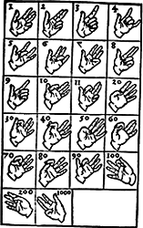

50.000 - 20.000 v. Chr.

Als erste Rechenhilfsmittel dienten dem Menschen mit Sicherheit die eigenen Finger, nicht zufällig bezieht sich das Wort “Digit” auf einen Finger (oder Zehe), wie auch auf eine Ziffer.